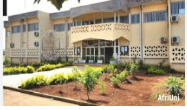

IUT de Ngaoundéré

|
Présentation de l'IUT de Ngaoundéré
L'Université de Ngaoundéré est une université publique créée par décret présidentiel N°93/028 du 19janvier 1993. Elle est issue de la transformation du Centre Universitaire de Ngaoundéré. Le campus principal est situé à Dang,Ngaoundéré. Elle accueille des étudiants du Cameroun et de la sous région:Tchad,RCA,Gabon,Congo etc... La direction est sous la tutuelle du Professeur Mamoudou Abdoulmoumini et constituer de 12 établissements, 74 départements et 123 programmes d'enseignement
|